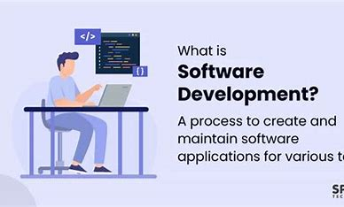
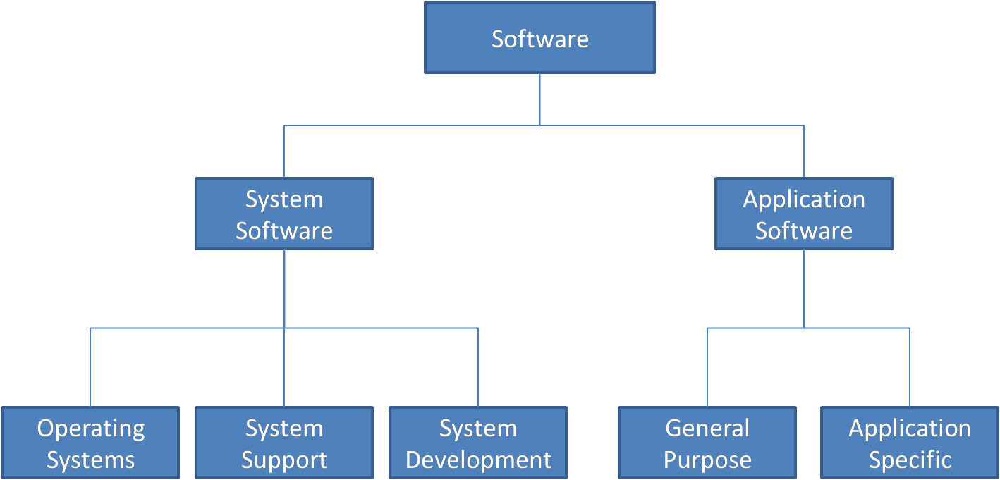
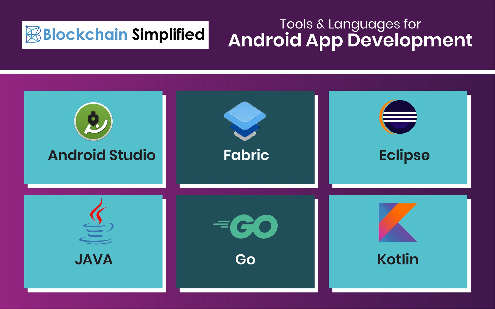

Software Development
What is Software Development ?
Software Development is defined as the process of designing, creating, testing, and maintaining computer programs and applications. Software development plays an important role in our daily lives. It empowers smartphone apps and supports businesses worldwide. According to the U.S. Bureau of Labor Statistics, there is a projected 21% increase in software developer employment from 2018 to 2028, which is significantly higher than the national average.
Typer of Software
System software is software that directly operates computer hardware and provides basic functionality to users as well as other software for it to run smoothly.
Application software is a software that is designed for end-user to complete a specific task. It is a product or programm that is only intended to meet the needs of end users. It includes word processors, spreadsheets, database management, inventory, and payroll software, among other things.
Programming software is a software that is designed for programmers to develop program. It consist of code editor, compiler, interpreter, debugger etc.
Road-map To become Software developer
We will provide you the clear and easiest way to lern to develop a software.
1. Android App Development
Android operating system is the largest installed base among various mobile platforms across the globe. Hundreds of millions of mobile devices are powered by Android in more than 190 countries of the world. It conquered around 71% of the global market share by the end of 2021, and this trend is growing bigger every other day. The company named Open Handset Alliance developed Android for the first time that is based on the modified version of the Linux kernel and other open-source software. Google sponsored the project at initial stages and in the year 2005, it acquired the whole company. In September 2008, the first Android-powered device was launched in the market. Android dominates the mobile OS industry because of the long list of features it provides. It’s user-friendly, has huge community support, provides a greater extent of customization, and a large number of companies build Android-compatible smartphones. As a result, the market observes a sharp increase in the demand for developing Android mobile applications, and with that companies need smart developers with the right skill set. At first, the purpose of Android was thought of as a mobile operating system. However, with the advancement of code libraries and its popularity among developers of the divergent domain, Android becomes an absolute set of software for all devices like tablets, wearables, set-top boxes, smart TVs, notebooks, etc.
In this we will learn android development from JAVA and KOTLIN language which is now very trending languages in IT market.
1. JAVA
Android app development can play a major role in writing the app functionalities using Java programming. Every activity can be designed with Java programming. Android apps are developed using the Android Studio IDE, which provides the environment for Java development for Android programming.
Requirment :
What is XML ?
XML stands for Extensible Markup Language. XML is a markup language much like HTML used to describe data. It is derived from Standard Generalized Markup Language(SGML). Basically, the XML tags are not predefined in XML. We need to implement and define the tags in XML. XML tags define the data and used to store and organize data. It’s easily scalable and simple to develop. In Android, the XML is used to implement UI-related data, and it’s a lightweight markup language that doesn’t make layout heavy. XML only contains tags, while implementing they need to be just invoked.
Lets Start learning Android app development using java :
It will take time but in 60 days you will able to create your own application .
2. KOTLIN
Kotlin is a cross-platform programming language that may be used as an alternative to Java for Android App Development. Kotlin is an easy language so that you can create powerful applications immediately. Kotlin is much simpler for beginners to try as compared to Java, and this Kotlin Android Tutorial can also be used as an ‘entry point’ for Android App Development.
Why to use Kotlin ?
Kotlin is a modern, cross-platform programming language that was introduced by JetBrains in 2011 to develop the language and was released in 2016 in 2017 google announced Kotlin is an official language for Android development. It is an alternative to Java for Android App Development. Kotlin is free, and it was developed under Apache 2.0, and the source code is on GitHub. It is compatible with Java, which means that Kotlin programs can support Java.
Lets Learn Kotlin language to create an android application
Now we will study that how to convert java code into kotlin using Android Studio !!
In Google I/O 2017, Kotlin has been declared as an official language for Android app development. This language gains popularity among developers very quickly because of its similarities as well as interoperable with Java language. One can mix code of Java and Kotlin while designing an Android project. Some of the major challenges faced by developers like avoiding null pointer exceptions are easily handled by Kotlin. Because of all these reasons, it became essential to learn Kotlin. However, Android Studio takes care of this need. Developers can easily convert their Java code into Kotlin in Android Studio
Comments